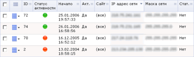

Стоп-лист - таблица, содержащая параметры, используемые для ограничения доступа посетителей к содержимому сайта и перенаправлению на другие страницы.
Фильтр
| Наименование параметра | Описание |
|---|---|
| ID | Маска для отбора записей стоп-листа по идентификатору. |
| Сайт | Позволяет ограничить поиск записями стоп-листа только конкретных сайтов. |
| Дата начала | Время начала активности искомой записи стоп-листа. |
| Дата окончания | Время окончания активности искомой записи стоп-листа. |
| Активно | Позволяет выбрать или все записи, или только с установленным / снятым флагом Активно. |
| Добавить в статистику | Позволяет выбрать или все записи, или только с установленным / снятым флагом Добавить в статистику. |
| IP адрес | IP адрес посетителя искомой записи стоп-листа. |
| UserAgent | UserAgent посетителя. |
| Откуда | Ссылающаяся страница (отбор записей по страницам, с которых приходили посетители, попавшие в стоп-лист). |
| Куда | Отбор записей по страницам, на которые приходили посетители. |
| Перенаправить | Поиск записей по маске страницы, на которую перенаправляется посетитель. |
| Сообщение | Поиск записей по маске сообщения, отображаемого посетителю в стоп-листе. |
| Комментарий | Комментарий администратора. |
| Логика между полями | Определяет, будут ли при поиске учитываться все критерии, или требуется совпадение по хотя бы одному критерию. |
* - для данных полей вы можете воспользоваться специальными логическими выражениями.
Для того чтобы установить фильтр по заданным критериям поиска, нажмите кнопку Найти. Для отображения всех сессий нажмите кнопку Отменить.
Контекстная панель
| Кнопка | Описание |
|---|---|
| Добавить | Нажатие этой кнопки открывает форму добавления новой записи стоп-листа. |
| Excel | Экспортирует данные из отображаемой таблицы в формат MS Excel. |
| Настроить | Позволяет перейти к диалогу настройки внешнего вида отчетной формы. |
Таблица
| Колонка | Описание |
|---|---|
| Колонка флажков | Поле предназначено для выбора записей стоп-листа, к которым предполагается применить какое-либо действие из панели действий, расположенной ниже таблицы. |
| Меню действий |
Нажатие на кнопку действий в строке конкретной записи отображает меню, содержащее команды:
|
| ID | Идентификатор записи стоп-листа. |
| Статус активности | Индикатор, сигнализирующий об активности записи:
|
| Начало | Время начала действия записи. |
| Акт. | Флаг активности записи. |
| Сайт | Сайт, на котором активна данная запись стоп-листа. |
| IP адрес сети | IP-адрес посетителя. |
| Маска сети | Маска сети посетителя. |
| Стат. | Если да - в статистике регистрируется факт попадания посетителя в стоп-лист. |
| Выбрано | Количество записей, выбранных из базы данных. |
| Отмечено | Количество записей, отмеченных флажками. |
Пример записи
Нажмите на рисунок, чтобы увеличить
| © «Битрикс», 2001-2008, «1C-Битрикс», 2008 | 1С-Битрикс: Управление сайтом |